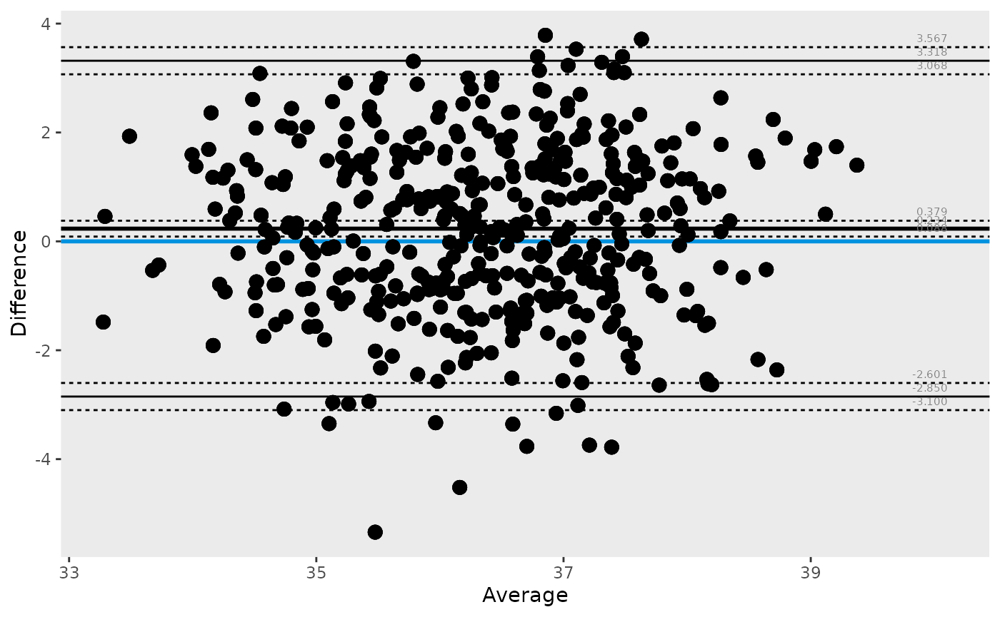
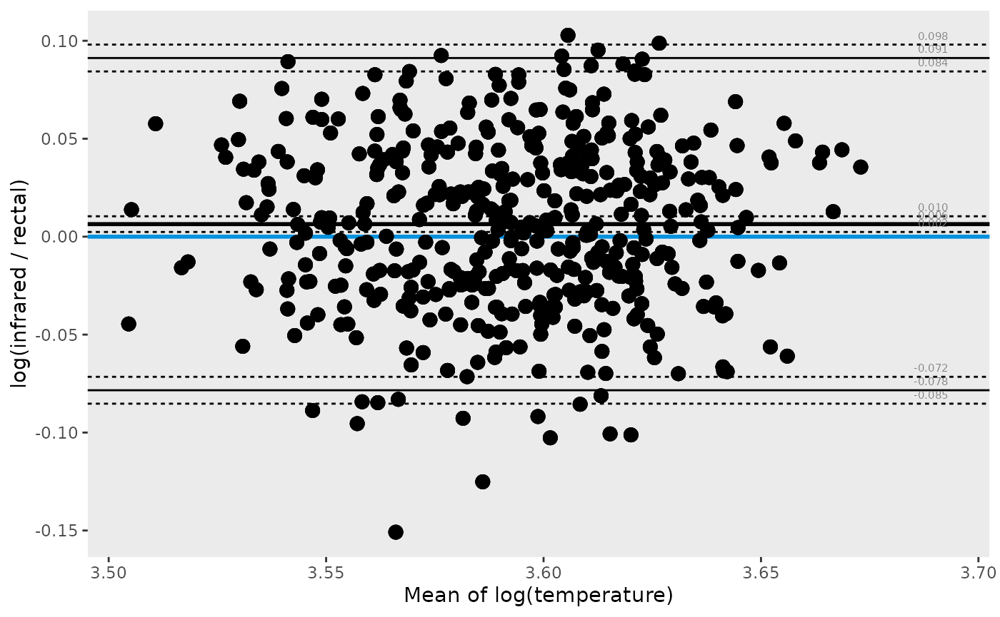
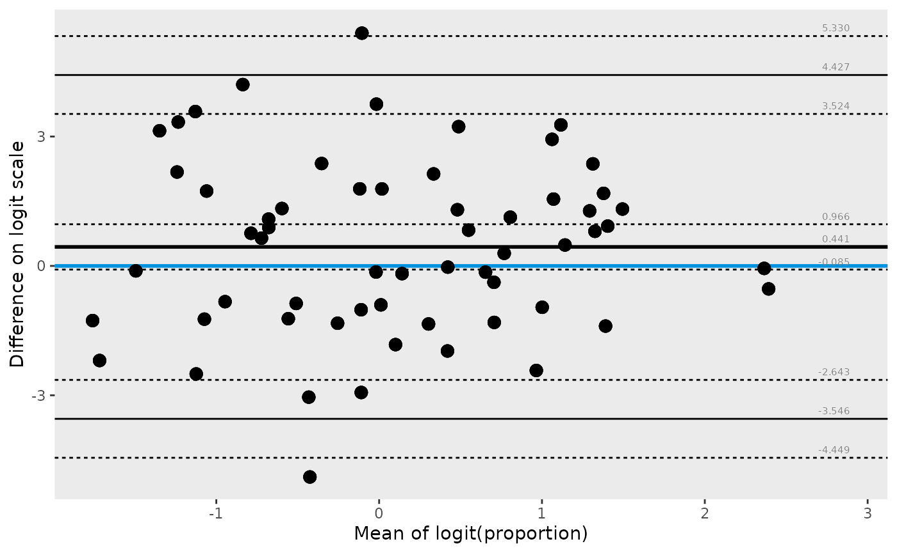

Load packages
library(tidyr) # Tidy Messy Data
# library(knitr) # A General-Purpose Package for Dynamic Report Generation in R
library(kableExtra) # Construct Complex Table with 'kable' and Pipe Syntax
library(ggBA)Set options
Prepare data: create columns for every method of measuring temperature.
tbl <-
temperature |>
pivot_wider(names_from = method, values_from = temperature)
ba_stat(data = tbl, var1 = infrared, var2 = rectal) |>
pivot_wider(names_from = parameter, values_from = value) |>
kable() |>
kable_styling()| n | bias | lloa | uloa | bias.lcl | lloa.lcl | uloa.lcl | bias.ucl | lloa.ucl | uloa.ucl |
|---|---|---|---|---|---|---|---|---|---|
| 450 | 0.233689 | -2.850304 | 3.317682 | 0.0879152 | -3.099616 | 3.06837 | 0.3794627 | -2.600992 | 3.566993 |
ba_plot(data = tbl, var1 = infrared, var2 = rectal)
#> Warning: Using `by = character()` to perform a cross join was deprecated in dplyr 1.1.0.
#> ℹ Please use `cross_join()` instead.
#> ℹ The deprecated feature was likely used in the ggBA package.
#> Please report the issue to the authors.
#> This warning is displayed once per session.
#> Call `lifecycle::last_lifecycle_warnings()` to see where this warning was
#> generated.
When measurements span several orders of magnitude, or when
proportional differences are more meaningful than absolute differences,
a log-scale Bland-Altman analysis is appropriate. On the log scale the
“difference” becomes
log(var1) - log(var2) = log(var1 / var2), and the bias
represents a systematic ratio between the two methods.
ba_stat(data = tbl, var1 = infrared, var2 = rectal, transform = "log") |>
pivot_wider(names_from = parameter, values_from = value) |>
kable(digits = 4) |>
kable_styling()| n | bias | lloa | uloa | bias.lcl | lloa.lcl | uloa.lcl | bias.ucl | lloa.ucl | uloa.ucl |
|---|---|---|---|---|---|---|---|---|---|
| 450 | 0.0064 | -0.0784 | 0.0912 | 0.0024 | -0.0853 | 0.0843 | 0.0104 | -0.0715 | 0.0981 |
The bias on the log scale can be back-transformed to a ratio:
exp(bias) gives the geometric mean ratio (infrared /
rectal).
log_stats <- ba_stat(data = tbl, var1 = infrared, var2 = rectal, transform = "log")
log_bias <- log_stats$value[log_stats$parameter == "bias"]
cat("Geometric mean ratio (infrared / rectal):", round(exp(log_bias), 4), "\n")
#> Geometric mean ratio (infrared / rectal): 1.0064Visualize the log-scale Bland-Altman plot. The y-axis shows
log(infrared / rectal) and the x-axis shows the mean of the
log-transformed values.
ba_plot(
data = tbl,
var1 = infrared,
var2 = rectal,
transform = "log",
xlab = "Mean of log(temperature)",
ylab = "log(infrared / rectal)"
)
For measurements expressed as proportions (values in (0, 1)), a logit transformation stabilises variance and yields differences on an approximately Normal scale.
set.seed(42)
prop_tbl <- data.frame(
p1 = runif(60, 0.05, 0.95),
p2 = runif(60, 0.05, 0.95)
)
ba_stat(data = prop_tbl, var1 = p1, var2 = p2, transform = "logit") |>
pivot_wider(names_from = parameter, values_from = value) |>
kable(digits = 3) |>
kable_styling()| n | bias | lloa | uloa | bias.lcl | lloa.lcl | uloa.lcl | bias.ucl | lloa.ucl | uloa.ucl |
|---|---|---|---|---|---|---|---|---|---|
| 60 | 0.441 | -3.546 | 4.427 | -0.085 | -4.449 | 3.524 | 0.966 | -2.643 | 5.33 |
ba_plot(
data = prop_tbl,
var1 = p1,
var2 = p2,
transform = "logit",
xlab = "Mean of logit(proportion)",
ylab = "Difference on logit scale"
)